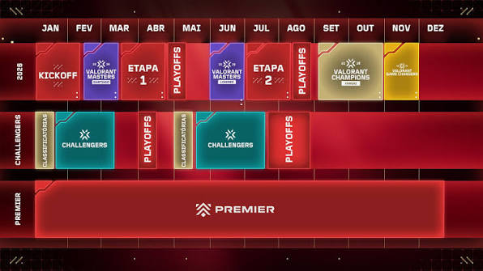
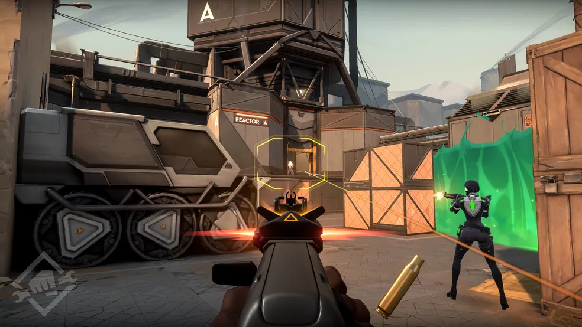
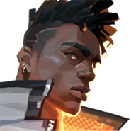
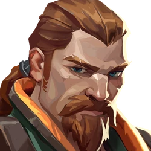

Inicio de um jogo viral
Riot Games lançou VALORANT em junho de 2020 para competir diretamente no mercado de FPS tático, combinando a precisão de tiro no estilo Counter-Strike com habilidades únicas de personagens.
Origens e Desenvolvimento (Projeto A)
O Anúncio: Revelado em outubro de 2019 durante o evento de 10 anos da Riot sob o codinome Project A, marcando a expansão da empresa além do ecossistema de League of Legends.
Foco Técnico: O jogo foi projetado do zero focado na cena competitiva, priorizando servidores globais de 128 ticks, otimização para PCs fracos e o desenvolvimento do Vanguard, um sistema anti-cheat proprietário em nível de kernel.
Beta Histórico: O beta fechado em abril de 2020 gerou um fenômeno sem precedentes na Twitch, quebrando recordes de audiência enquanto jogadores buscavam acesso antecipado via "drops".
Evolução e Cenário Competitivo
Circuito Esportivo (VCT): Em pouco tempo, a Riot estruturou o VALORANT Champions Tour (VCT), que evoluiu para um modelo de ligas franqueadas internacionais (Américas, EMEA, Pacífico e China). Consolidação nos Esports: Tornou-se um dos maiores esportes eletrônicos do planeta, com eventos internacionais (Masters e Champions) acumulando milhões de espectadores simultâneos.
Atualidade
Expansão Multiplataforma: Deixou de ser exclusivo para PC e expandiu para os consoles (PlayStation 5 e Xbox Series X/S), além de manter o projeto VALORANT Mobile em andamento.
Meta Dinâmico: O jogo conta com um elenco de mais de 20 agentes divididos em 4 classes (Duelistas, Iniciadores, Controladores e Sentinelas), com atualizações constantes de mapas e balanceamento organizadas por Episódios e Atos. Base de Jogadores: Mantém uma das comunidades ativas mais massivas do mundo do jogo competitivo, consolidado como um pilar da cultura pop gamer atual.
uma foto de como o jogo estava no lançamento e o funcionamento do Sistema do competitivo


A história de VALORANT se passa em uma Terra do futuro próximo transformada por um evento cósmico e marcada por uma guerra silenciosa entre dimensões paralelas.
A Primeira Luz e a Radianita
O Evento Global: Um fenômeno misterioso conhecido como A Primeira Luz atinge a Terra, causando mudanças profundas na tecnologia, no clima e na biologia humana. Surgimento dos Radiantes: Algumas pessoas ao redor do mundo desenvolveram habilidades sobre-humanas inatas em decorrência do evento, tornando-se conhecidas como Radiantes. A Era da Radianita: A Primeira Luz traz ao mundo a Radianita, uma fonte de energia limpa e extremamente valiosa. A megacorporação Kingdom assume o monopólio da extração e refino desse elemento, tornando-se uma superpotência global.
O Protocolo VALORANT
Formação Secreta: Após acidentes e catástrofes provocadas pelo uso desmedido da Radianita (como o colapso que destruiu parte de Veneza), surge uma organização secreta de elite: o Protocolo VALORANT. Composição da Equipe: Fundado por figuras como Brimstone e Viper, o protocolo recruta tanto Radiantes quanto humanos comuns equipados com tecnologia avançada movida a Radianita para proteger o planeta de ameaças globais.
A Guerra entre Mundos (Terra-1 vs. Terra-2)
A Descoberta do Espelho: O Protocolo descobre que existe uma Terra-2 (Terra Espelho), um universo paralelo que sofreu um colapso energético devastador e está prestes a morrer por falta de Radianita. Invasões e o Spike: Desesperados para salvar seu próprio mundo, os habitantes da Terra-2 começam a invadir a Terra-1 para roubar reservas de Radianita. Para isso, utilizam o Spike, um dispositivo criado para teleportar o minério bruto entre as dimensões. O Duelo de Duplicatas: Esse conflito dimensional justifica a premissa do jogo: os Agentes da Terra-1 precisam impedir o roubo do recurso lutando diretamente contra suas próprias contrapartes idênticas vindas do universo espelho.
imagens de eventos importantes na historia do jogo.
Duelistas
Função: Entrar em combate primeiro, conseguir a eliminação inicial (entry kill) e abrir espaço para a equipe nos pontos de bomba (sites).
Estilo de Jogo: Agressivo e individual, focado em mobilidade, auto-cura ou habilidades que garantem vantagem em duelos diretos.
Iniciadores
Função: Coletar informação sobre a posição dos inimigos e preparar o terreno para que a equipe entre em combate com vantagem.
Estilo de Jogo: Suporte tático focado no uso de flashes, atordoamentos, cegueiras e drones de reconhecimento de área.
Controladores
Função: Bloquear a visão dos adversários e cobrir ângulos perigosos para ditar o ritmo e o controle do mapa.
Estilo de Jogo: Estratégico e focado no posicionamento de fumaças (smokes) e paredes para isolar combates e proteger a equipe.
Sentinelas
Função: Trancar áreas do mapa na defesa, atrasar avanços inimigos e proteger as costas (flank) da equipe no ataque.
Estilo de Jogo: Paciente e defensivo, apoiado no uso de armadilhas, câmeras, barreiras físicas e recursos de cura/ressurreição.
Exemplos de personagens nas classes ditas

